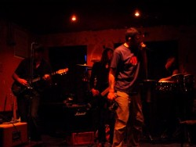
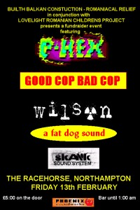

|  |
| News |
|
| Music |
|
|
| Live |
|
|
| Info |
|
|
| Press |
|
|
| Pix |
|
|
|
|
|||||
|
| |||||
|
November, 2010
(posted Tuesday, November 9th, 2010) the Wilson movie. We gave a sneak preview last week at a local film night...which was in the venue where we played the gig. So that was pretty strange to see! Kinda infinite regression faux 3D. With time travel. Ungh...
August, 2006
(posted Wednesday, August 16th, 2006) Planet Misery presents
May, 2006
(posted Friday, May 5th, 2006) Sunday 7th May The Racehorse, Abington Square, Northampton NN1 Planet Misery presents WILSON www.wilsondub.com http://www.myspace.com/wilsondub Northampton's original dub goth prog punk bruisers are back! admission free
December, 2005
(posted Friday, December 2nd, 2005) Wilson have just emerged from a very pleasant three days at Premier Studios in Corby http://www.premierstudios.co.uk with new recordings of two tunes,
October, 2005
(posted Saturday, October 15th, 2005) Wilson conclude their run on the BBC Weekender Chart with a second consecutive week at Number One. So our chart positions for the past few weeks look like this: No. 1 - No. 3 - No. 2 - No. 2 - No. 1 - No. 1. An impressive tribute to the power of the Wilson electoral machine. Thanks to everybody for your support! (posted Monday, October 10th, 2005) Wilson are delighted to report that they are back up to Number One on the Weekender chart. Thank you all for your votes, and please keep them coming. http://www.bbc.co.uk/northamptonshire/entertainment/weekender (posted Monday, October 3rd, 2005) Congratulations to Jon and Griff of the BBC Weekender on winning gold at the recent Gillard Awards for broadcasting. A righteous result! Wilson are currently flying high at No. 2 on the Weekender chart. Please take a moment of your day to pass by http://www.bbc.co.uk/weekender and register a vote for us there. Thank you!
September, 2005
(posted Friday, September 16th, 2005) Wilson are down to Number 3 in this week's BBC Weekender chart. Please, people, do take a moment of your time to help us topple the -admittedly excellent - Columbus & Crusoe from their lofty heights and raise the mighty Wilson back to their rightful spot at the top of the charts. You will have your reward on a higher plane of existence, or possibly in a pub. (posted Saturday, September 10th, 2005) Top of the Charts again! (posted Sunday, September 4th, 2005) Once again Wilson find themselves in the running on the BBC Weekender chart. This time they didn't even tell us. I think it's a test of our electoral support. Fair enough. It's important to maintain vigilance on behalf of democracy. But will we be caught out? Will our loyal heartland vote be revealed to be a mere chimera, a nine day wonder, the fickle flickering of the flame of fortune on the chrome dome of our secret Antarctic headquarters? Of course not.
August, 2005
(posted Friday, August 26th, 2005) The First Wave penetrates the Balloon Festival at about 3:30 on a sunny Saturday afternoon. Happily Julie Reinger and the Weather Prophets have got it badly wrong. Deluge there is none. It's a beautiful day in the neighbourhood. The first thing we find as we enter the backstage compound is the Mystic Crew, which is a good way to start. Northampton's finest original reggae rockers have the slot before ours this afternoon, but right now the Drake Music Project are onstage. They are an extraordinary band, made up entirely of some pretty severely disabled people. With keyboards and percussion they are weaving a mad, precise and rather beautiful sort of mutated sixties soundtrack samba sound. It's like nothing you have ever heard. See them if you get the chance; you won't believe what's going on in front of you. more... (posted Friday, August 26th, 2005) It is three thirty on a damp afternoon in the teeth-grindingly picturesque village of Castle Ashby. A large silver station wagon packed to the gunnels with boxes of black and chrome slides stealthily along a quaint country lane. Two faintly desperate looking men in sunglasses are in the front, their windows wound fully down, as though the day were much sunnier than it is. From those windows comes a cloud of acrid smoke and the unmistakeable roar of Killing Joke's mighty Asteroid. The first wave has almost made it to Security Checkpoint One. more... (posted Wednesday, August 17th, 2005) People~
June, 2005
(posted Monday, June 27th, 2005) No boats required! We said it would be drier than Glastonbury, didn't we? Another super night at the Racehorse for Wilson. Our projector made its live debut, running kung-fu movies and footage of...uh...Wilson over the band and the PA from Phoenix Soundworks performed admirably under severe pressure. The Importers got the show under way with a bright and tuneful set of original pirate material that certainly revealed their fondness for New Order. It was only their second ever show, but despite the occasional wobbly moment where band and backing track didn't quite see eye-to-eye, they acquitted themselves well. We shall surely be seeing more of them. More...
May, 2005
(posted Friday, May 20th, 2005) Wilson have been invited to take part in Twinfest once again. After last year's surreal episode playing in an empty park at an hour when we would not be normally out of bed, we made a few gentle enquiries...with the result that you can see Wilson in the Racehorse garden at 8:00pm sharp on Saturday 4th June 2005. As far as we are aware, entrance is free.
March, 2005
(posted Sunday, March 27th, 2005) Wilson are currently rehearsing up new songs. We have styled the current crop of tunes "Battle Garage". There's one date to add to the listings: Saturday 21st May - The Labour Club, NN1 (support tbc).
February, 2005
(posted Sunday, February 20th, 2005) Wilson have been invited to headline at the Tom Hall Memorial gig at Northamptonshire County Cricket Club, Wantage Road, NN1 on Saturday 23rd April. Full details in due course, but we already know that the show also features sets from Curtis E. Johnson, Mrs. Pilgrimm, and Ghost Train. It will not be in the afternoon. It will be in the evening. Nor shall we be without our artillery. We shall be drummed up to the hilt. (posted Sunday, February 6th, 2005) Wilson have a very limited number of tickets for a private party which we are playing in Northampton Town on Saturday 5th February 2005. If you want one, come and find us...
December, 2004
(posted Friday, December 17th, 2004) Thanks to everybody who voted to make Wilson the People's Choice on BBC Radio Northampton's end of year awards. (posted Friday, December 10th, 2004) Once again the local BBC rock show, The Weekender, has embarked upon a cyber-election, this time to make their awards for the year 2004. The votes will be counted and the winners announced on the Weekender show on Friday 17th December.
November, 2004
(posted Tuesday, November 23rd, 2004) It's time to make An Announcement.
October, 2004
(posted Saturday, October 30th, 2004) Well, there goes our month of chart action, and many thanks to all who voted for Wilson. Final tally: 2 weeks at #1 and 2 weeks at #2. I reckon that makes us #1 for the month of October, don't you? Yeah, course you do. Thanks again, everybody. (posted Sunday, October 24th, 2004) Wilson have been toppled from their lofty pinnacle. We're down at Number 2 this week. (No, really, no need to say anything - we know) (posted Thursday, October 21st, 2004) Citizens~ (posted Saturday, October 16th, 2004) Many thanks to everybody whose votes made Wilson Number One on the BBC Radio Northampton Weekender chart for the second week running! But please do remember, this thing goes on all through the month of October. A whole new week has started now and the way that this thing works, all bets are off - so please do visit again and cast your vote for this week. Let's see how long we can keep Wilson at the Top Of The Charts!
September, 2004
(posted Thursday, September 30th, 2004)
(posted Thursday, September 16th, 2004) Headstone will be interviewed live on the BBC Radio Northampton show "Weekender" on Friday 17th September 2004. The show, which runs from 6:00 to 7:00 o'clock every Friday evening, will be coming live from the Roadmender in Northampton NN1, featuring live music from a number of local bands. http://www.bbc.co.uk/northamptonshire/music (posted Monday, September 13th, 2004) It's an overcast Sunday afternoon in Northampton. At the Cricket Club they are staging the first Tom Hall Memorial Cricket-for-All Challenge Tournament. In Abington Park there is a Gay Pride knees-up with bands and stuff. I am sitting in an otherwise empty Racehorse bar, my Burns in my lap, struggling to free the ball end of a broken 10 string from the body of the guitar.
August, 2004
(posted Thursday, August 19th, 2004) Congratulations to MC Bot and Tamsin on the birth of their daughter, Freya Violet Joy, Wednesday 18th August 2004
July, 2004
(posted Friday, July 2nd, 2004) Another Wilson gig appears. We've been asked to play the Racehorse front bar on Sunday 25th July. So we shall. And it will be free.
May, 2004
(posted Wednesday, May 12th, 2004) Wilson Involved in Festival with Hard-to-Understand Name
April, 2004
(posted Thursday, April 15th, 2004) Masters of Budvar, Headstone's guerilla promotions operation, are hosting a gig by our good friend from Leeds, D. Millard. D. Millard will be playing at The Racehorse, Northampton NN1 on Sunday 9th May 2004. Admission is free.
March, 2004
(posted Sunday, March 14th, 2004) Long ago, in a pub very far away, they did occasionally have a band on in the Racehorse bar of a Tuesday night. I can just about recall seeing quite a tidy band there, named Skuravi after the stylish Czech striker of the day. That would have been about 1992. But for years now it's been the same: you just don't get bands on in the Racehorse bar of a tuesday night. (posted Wednesday, March 3rd, 2004) Headstone's been busy at the old typewriter: Moles Club gig review, The Folk House gig review, and The Labour Club gig review
February, 2004
(posted Saturday, February 14th, 2004) Well, the Romanian benefit at the Racehorse passed off well. It was a warm and friendly night out, with an awful lot of faces rallying round to raise money for the Fred Ryan's guerilla hospice-building operation and the Lovelight Romanian Children's Project. There was even a raffle! More...
January, 2004
(posted Sunday, January 25th, 2004)  A couple of positive developments on the Romanian benefit at the Rockin' Horse. First off, the bar will be open late. (Notice how this is becoming something of a trend at Wilson's Northampton performances? This town is on the move, subtly shapeshifting into the new Barcelona. Oi, New Yorkers - you can smoke in the pubs here. Ha! Ha! Ha! Ha! Ha! Ha! Ooooh-Ho! Ho! Ho! Security!) (posted Tuesday, January 13th, 2004) It appears that Fred Ryan, the proprietor of those legendary Welsh parties, is going to Romania to build a hostel for sick children. Benefit concerts in Northampton and Builth Wells will be announced soon.
December, 2003
(posted Tuesday, December 30th, 2003) A return to action for the Wilson Five, as Mister E. Wilson succumbs to the slumber-related after-effects of a festive feed. With the Rocket Hi-Fi boys unable to make it, DJ Ethan comes to the rescue (direct from the hospital) with a top set of dirty breakbeats, house and shouting. The night is free, the room fills up. In the cupboard beside the stage there is a dense fog. (posted Sunday, December 14th, 2003) Greetings from the geriatric ward...
November, 2003
(posted Thursday, November 6th, 2003) Well, nobody got arrested last night , and our comical home-made PA held up too. We ran everything (DAT machine; PA amp; Mixing desk; Bass Amp; 2 Guitar amps; Curtis' Amp; Curtis' Air-FX; Curtis' Delay; Pat's Delay; Pat's tube-in-a-box) off one power socket (now you couldn't do that in America, now could you?) Went down very well, all things considered. (Curtis on ecstasy? Perish the very thought...) We played pretty early (about 9:15 to 10:00) so as to avoid too much neighourhood grief, which did mean that a few of the hardcore only bowled up as we were dismantling our kit. Sorry about that...
September, 2003
(posted Tuesday, September 2nd, 2003) Well, it's finally happened. We've been holding out on the capital for 2 years now. We didn't want to play in some indie dullard basement with sticky carpets and 19 year-old trustafarian shitheads on the bill, but the wait has been worth it.
August, 2003
(posted Thursday, August 28th, 2003) Regular readers might recall that last October, just when the band was starting to get good, we headed out in convoy to Builth Wells in Mid Wales for a gig at one of Fred's legendary parties. It was a memorable evening, but the members of the posse who don't eat meat did have one small problem, what with curried goat being the dish of the day. Your correspondent had a whale of a time on a diet of Liquorice Allsorts, as it goes. (posted Thursday, August 21st, 2003) We've got a new intro to our set. With sheep. And rain. Yes, we're on our way to Wales this weekend for a Fred's Farm Special...
July, 2003
(posted Monday, July 28th, 2003) Stevie G returned from working in Leicester last week to find that his clueless flatmates had gone and spent about three hundred pounds of Steve's own money on a nice holiday for him. They had cheerfully ignored his suggestions that a trip to Turkey starting on Monday might be just the ticket. Instead, they booked him onto a holiday trip that departed on Saturday morning. (posted Monday, July 21st, 2003) Gig: Sunday 27th July 2003 (posted Tuesday, July 15th, 2003) Wilson have been invited to appear on the next co-op compilation (as they are called) from Heyday Records of California. So
May, 2003
(posted Monday, May 5th, 2003)
April, 2003
(posted Friday, April 25th, 2003) Star Wars day, apparently...will Steve really dress up as a wookie? Where do you get that kind of gear? Russ suggested renting him a bear suit and throwing him to some dogs. He'd probably end up making the right sort of noises, at least. (posted Tuesday, April 22nd, 2003) Well, the Nazis got smashed once again, and later (in our own little way) so did we. (posted Wednesday, April 16th, 2003) We never escape. Every time we play Leeds on a Friday we are confronted with the Wankers' Parade, proof positive that a transport system reliant almost entirely upon private cars is already discredited, doomed, dull, dirty, dreary and shat. more... (posted Tuesday, April 1st, 2003) The Labour Club show went well, with a nice turn-out and a good vibe in the room. We sold all the copies of "Istanbul Connection" that we brought with us. Andy Skank played all the punk rock songs about war that he could think of. How long since you last heard the Stranglers singing "I can drive my very own tank"?
March, 2003
(posted Tuesday, March 25th, 2003) Our CD single, Istanbul Connection b/w Quality People will be available from our gig at the Labour Club on 29th March.
February, 2003
(posted Thursday, February 6th, 2003) Istanbul and Quality People are the tunes we have recorded with Donald Ross Skinner. They'll be finished and in the post by the end of the month.
January, 2003
(posted Friday, January 24th, 2003) We are finishing off our "proper" recording on 3rd February, so copies should be winging their way around the globe by mid-Feb.
November, 2002
(posted Saturday, November 16th, 2002) Planning on entering a studio in December with Donald Ross Skinner (of Copey infamy) producing. Looking forward to that, as I'm sure you can imagine.
| |||||


![[pic]](images/2003May4/250_JawaDarthWookie.jpg)